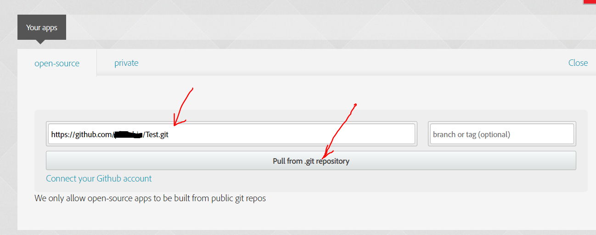

Go to build.phonegap.com and create a free account. Then create on the button to create a new app.
Go to your github project and click on the green button: "Clone or Download". Then click on the copy to clipboard icon as shown in red below:
Now go back to your build.phonegap.com and paste the git that you have copied into the textbox where it says "paste .git repo". Then click on the button "Pull from .git repository"

Phonegap will fetch the project from the github repository. You need to refresh the page. Then, you will see the button: "Ready to build". Click on it.